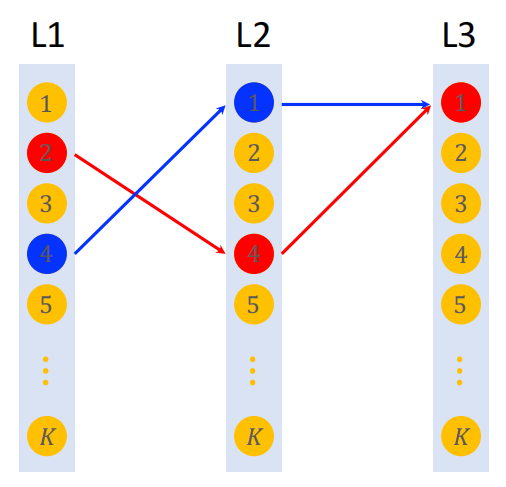
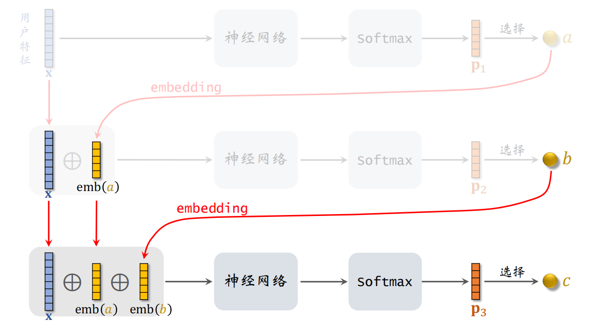
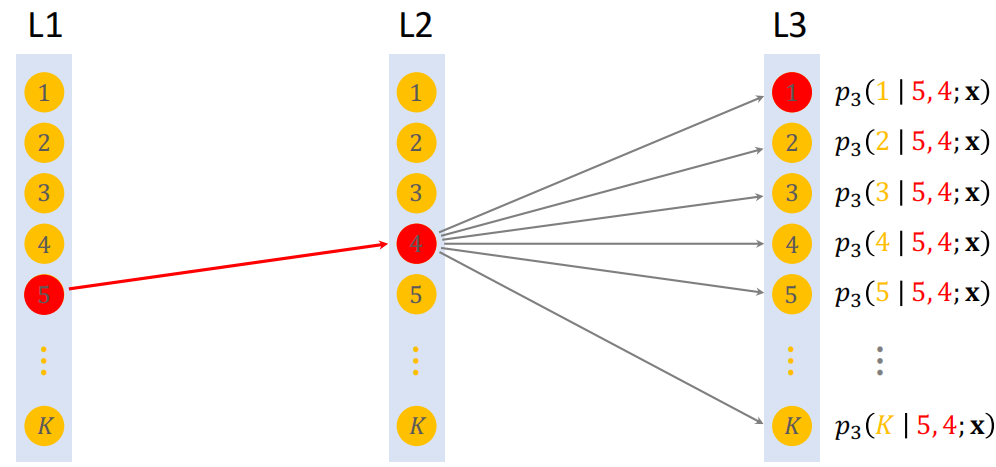
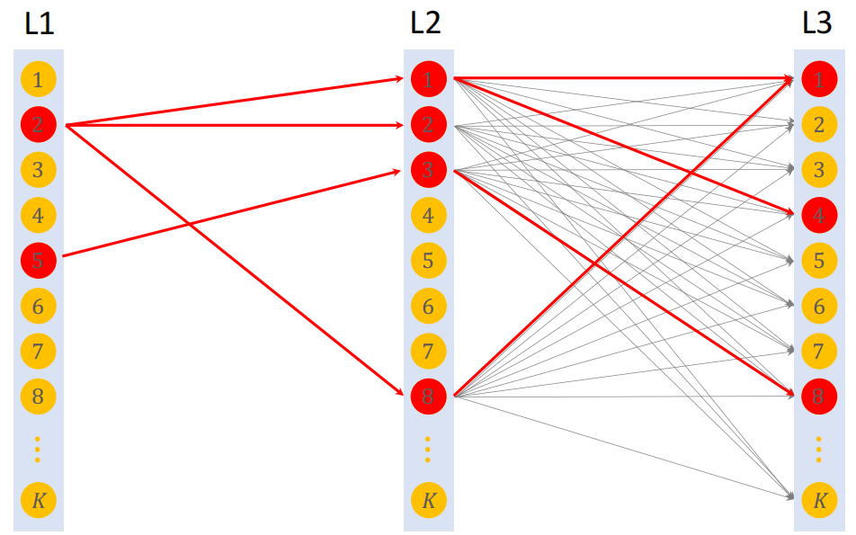
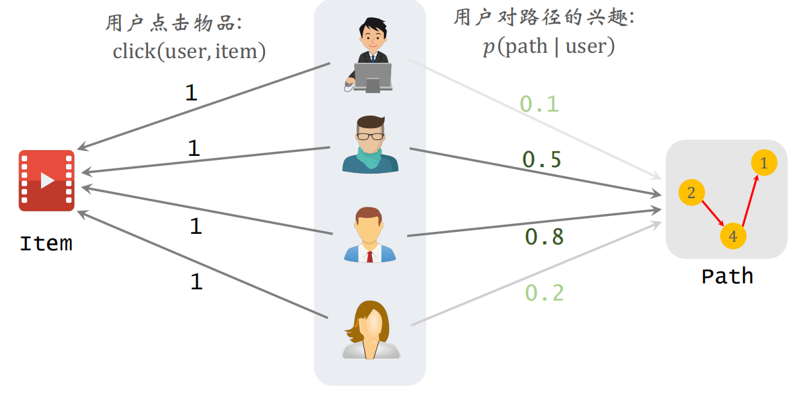
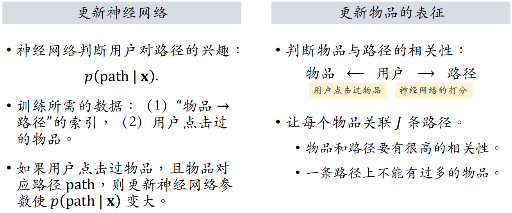
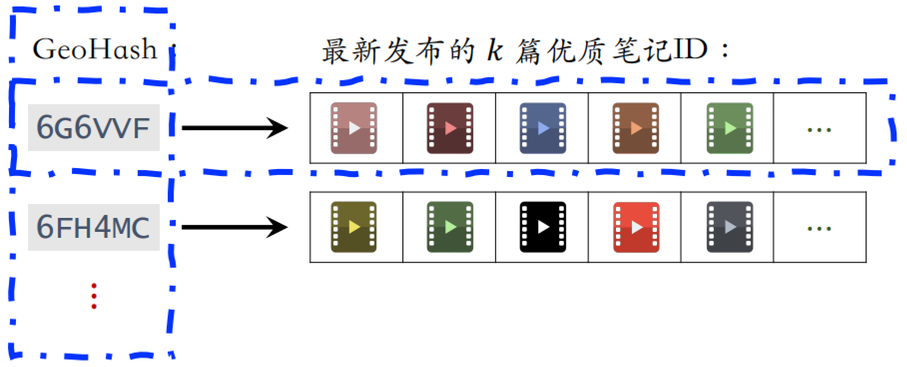
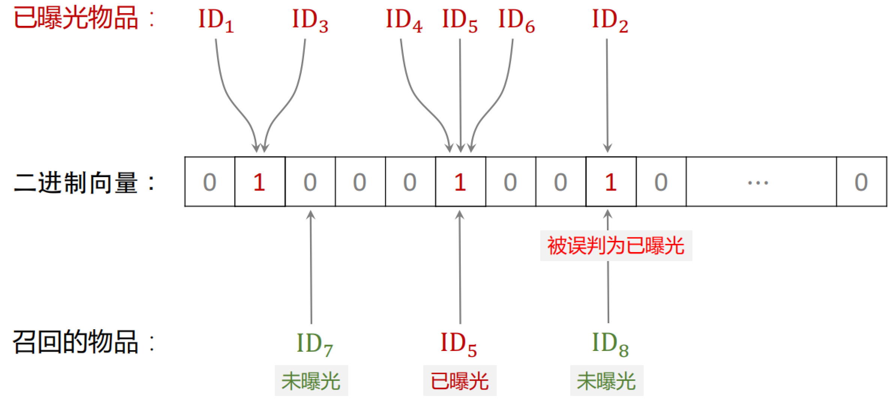
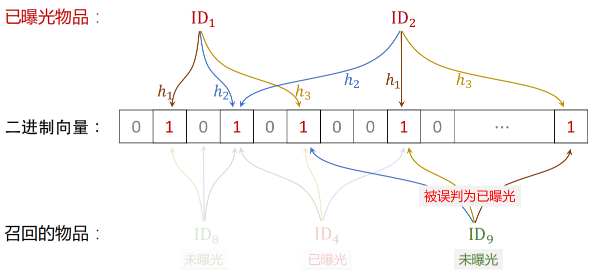
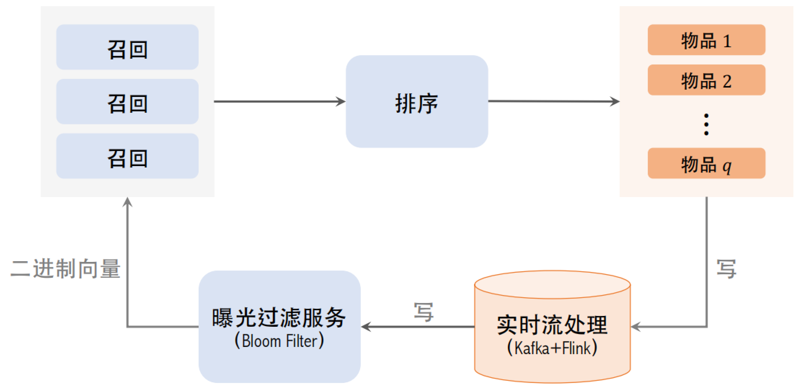

WSS推荐系统学习笔记4：召回3
1 Deep Retrieval
经典的双塔模型把⽤户、物品表示为向量，线上做最近邻查找。Deep Retrieval 把物品表征为路径（path），线上查找用户最匹配的路径。Deep Retrieval 类似于阿⾥的 TDM。
1.1 索引
索引是把物品表征为路径，如下图所示：
- 深度：
- 宽度：
把一个物品表示为一条路径（path），比如 [2, 4, 1]。一个物品可以表示为多条路径，比如 。

之后建立两个索引，分别是物品到路径的索引和路径到物品的索引。其中一个物品可以对应多条路径，一条路径也可以对应多个物品。
1.2 预估模型
之后需要预估用户对路径的兴趣，用 3 个节点表示⼀条路径：：
- 给定用户特征 ，预估用户对结点 的兴趣
- 给定用户特征 和 ，预估用户对结点 的兴趣
- 给定用户特征 ，预估用户对结点 的兴趣
则可以得到用户对 的兴趣为：

1.3 线上召回
线上召回的流程如下：
- 给定用户特征，用神经网络做预估，用 beam search（束搜索）召回⼀批路径。
- 利⽤索引，召回⼀批物品，查看索引 ，每条路径对应多个物品。
- 对物品做排序，选出一个子集。
线上召回：
1.3.1 束搜索
假设有 3 层，每层 个节点，那么⼀共有 条路径。⽤神经⽹络给所有 条路径打分，计算量太大。而是用 beam search，可以减小计算量。beam search 需要设置超参数 beam size。
Beam Search（size = 1）

Beam Search（size = 4）

1.4 训练
1.4.1 学习神经网络参数
训练时同时学习神经网络参数和物品表征，把神经网络的输出 用来预估用户对路径 的兴趣。把⼀个物品表征为多条路径 ，建⽴索引：
正样本 。把物品表征为 条路径：，则用户对路径 的兴趣：
如果用户点击过物品，说明用户对能够表示该物品的 条路径全部感兴趣。所以应该让以下公式变大：
因此定义损失函数，损失应该越小越好，所以应该加上符号：
这个神经网络的作用是判断用户对路径有多感兴趣，如果用户点击过物品，则认为用户对物品的 条路径都感兴趣。
1.4.2 学习物品表征
除了训练上述神经网络的参数，还要学习物品的表征。用户 user 对路径 的兴趣记作：
物品 item 与路径 path 的相关性：
公式中的第一项是预估用户对路径的兴趣，第二项是用户是否点击（0或1）。根据 选出 条路径作为 item 的表征。

以用户作为中间过渡，来计算物品和路径的关系。
之后选出 条路径 ，作为物品的表征。则损失函数（选择出与 item 高度相关的 path）为：
为了避免过多的 item 集中在⼀条 path 上，我们希望每条路径上的物品都比较平均，需要添加一个正则项，避免让它关联到更多的物品：
选中的路径有较高的分数 ，而且路径上的物品数量不会太多。

1.5 总结
**召回：**用户 → 路径 → 物品
在做召回的时候给定用户特征 ，用神经网络预估用户对路径 的兴趣，分数记作 。
用 beam search 寻找分数 最高的 条 path，之后利用索引 召回每条路径上的 个物品。一共召回 个物品，对物品做初步排序，返回分数最高的若干物品。
**训练：**同时学习 用户—路径 和 物品—路径 的关系
一个物品被表征为 $J $ 条路径：。如果用户点击过物品，则更新神经网络参数，使分数增大。
如果用户对路径的兴趣分数 较高，且用户点击过物品 item，则 item 与 path 具有相关性。之后寻找与 item 最相关的 条 path，且避免一条路径上物品过多。
2 其他召回通道
2.1 GeoHash 召回
GeoHash 召回是一种地理位置召回，⽤户可能对附近发⽣的事感兴趣。GeoHash 对经纬度的编码，表示地图上⼀个长⽅形区域，之后以 GeoHash 建立索引，取回相关的优质笔记列表（按时间倒排）。
这条召回通道没有个性化，只是根据地理位置来进行召回。

如果用户允许 APP 获取用户定位，根据⽤户定位的 GeoHash，取回该地点最新的 篇优质笔记。
2.2 同城召回
和上面的 GeoHash 相同，唯一的区别就是使用同一个城市内的内容进行召回。以城市为索引，建立优质笔记列表（按时间倒序），这条召回通道也没有个性化。
2.3 作者召回
如果你对一个作者感兴趣，那么系统就会给你推这个作者发布的其他内容。
系统维护2个索引：
- 用户 → 关注的作者
- 作者 → 发布的笔记
做召回时，按照用户 → 关注的作者 → 最新的笔记来进行召回。
2.3.1 有交互的作者召回
**有交互的作者召回：**如果⽤户对某笔记感兴趣（点赞、收藏、转发），那么⽤户可能对该作者的其他笔记感兴趣。
- **索引：**用户 → 有交互的作者
- **召回：**用户 → 有交互的作者 → 最新的笔记
2.3.2 相似作者召回
如果⽤户喜欢某作者，那么⽤户喜欢相似的作者。
- **索引：**作者 → 相似作者（ 个作者）
- **召回：**用户 → 感兴趣的作者（ 个作者）→ 相似作者（ 个作者）→ 最新的笔记（ 篇笔记）
2.4 缓存召回
主要想法是复⽤前 次推荐精排的结果：精排输出几百篇笔记，送⼊重排，重排做多样性抽样，选出几十篇。其中，精排结果⼀⼤半没有曝光，被浪费。
把精排前 50 的物品，但是没有曝光的，缓存起来，作为一条召回通道。下次用户刷小红书的时候，作为一条召回通道再选出来。
由于缓存大小固定，需要退场机制。一些退场机制如下：
- ⼀旦笔记成功曝光，就从缓存退场
- 如果超出缓存⼤⼩，就移除最先进⼊缓存的笔记
- 笔记最多被召回 10 次，达到 10 次就退场
- 每篇笔记最多保存 3 天，达到 3 天就退场
2.5 总结
一共介绍了三大类一共六条召回通道，这些都是工业界一直在使用的，虽然比不上之前介绍的召回通道，但是也是很有效的召回方式。
- 地理位置召回：GeoHash 召回、同城召回
- 作者召回：关注的作者、有交互的作者、相似的作者
- 缓存召回
3 曝光过滤和 Bloom Filter
**曝光过滤问题：**如果用户看过某个物品，则不再把该物品曝光给该用户。并不是所有的物品都有曝光过滤问题，像 youtube 这种长视频，看过的内容可以再次观看。
想要做曝光过滤，需要对于每个⽤户，记录已经曝光给他的物品（⼩红书只召回 1 个⽉以内的笔记，因此只需要记录每个⽤户最近 1 个⽉的曝光历史）。对于每个召回的物品，判断它是否已经给该⽤户曝光过，排除掉曾经曝光过的物品。
⼀位⽤户看过 个物品，本次召回 个物品，如果暴力对比，需要 的时间，计算量太大，所以在实际应用中不使用暴力对比，而是使用 Bloom Filter。
3.1 Bloom Filter
Bloom Filter 判断⼀个物品 ID 是否在已曝光的物品集合中。
- 如果判断为 no，那么该物品一定不在集合中
- 如果判断为 yes，那么该物品很可能在集合中（可能误伤，错误判断未曝光物品为已曝光，将其过滤掉）
所以使用Bloom Filter 进行过滤，那么一定不会把曝光过的物品再次给用户，但是有可能会误伤。
Bloom Filter 把物品集合表征为⼀个 维⼆进制向量，取值为 0 或 1。每个⽤户有⼀个曝光物品的集合，表征为⼀个向量，需要 bit 的存储。Bloom Filter 有 个哈希函数，每个哈希函数把物品 ID 映射成介于 0 和 之间的整数
Bloom Filter（k = 1）

Bloom Filter（k = 3）

记曝光物品集合大小为 ，⼆进制向量维度为 ，使⽤ 个哈希函数。则Bloom Filter 误伤的概率为：
- 越大，向量中的 1 越多，误伤的概率越大，即未曝光物品的 个位置恰好都是 1 的概率⼤
- 越大，向量越长，越不容易发生哈希碰撞，但是需要存储的信息就越多
- 太大、太小都不好， 有最优取值
设定可容忍的误伤概率为 ，那么最优参数为：
3.2 曝光过滤的链路

在用户刷新之前就要把本次曝光的结果写到 Bloom Filter上，否则下一刷很有可能曝光重复的物品。所以使用实时流处理，Flink 实时读取 Kafka 队列，做实时计算，计算曝光物品的哈希值，把结果写到 Bloom Filter 的二进制向量上。用这样的实时数据链路，在物品曝光之后，这位用户的 Bloom Filter 就会被修改，之后就能有效避免曝光重复。但是实时流也最容易出问题，例如实时流挂掉了或者延迟特别大，那么推荐效果就会变差。
之后 Bloom Filter 把物品的二进制向量传送给召回服务器。在召回服务器上，用 Bloom Filter 计算召回的物品的哈希值，之后再和二进制向量做对比，把已经曝光的物品给过滤掉。
3.3 Bloom Filter 的缺点
Bloom Filter 把物品的集合表⽰成⼀个二进制向量，每往集合中添加⼀个物品，只需要把向量 个位置的元素置为 1（如果原本就是 1，则不变）。
但是 Bloom Filter 只⽀持添加物品，不⽀持删除物品。从集合中移除物品，无法消除它对向量的影响，这是因为向量中的元素是所有物品共享的，如果把向量的一个元素改为 0，相当于很多物品都给删除了。想要删除一个物品，就需要重新计算所有物品的二进制向量。
每天都需要从物品集合中移除年龄⼤于 1 个⽉的物品（超龄物品不可能被召回，没必要把它们记录在 Bloom Filter，降低 可以降低误伤率）。
 微信
微信 支付宝
支付宝